▲ 환선굴 내부에는 트인 공간이 이어진다 사진=한국관광공사
삼척 가을 여행, 바다만 보고 오면 절반만 보고 온 셈일까. 삼척은 동해안 해안도로로 유명하지만, 내륙으로 들어가면 총길이 6.2km에 이르는 대형 석회암 동굴이 있고, 해안 쪽에는 맑은 물로 알려진 작은 어항 장호항이 있다. 동해안 7번 국도 전체 코스는 동해안 7번 국도 드라이브 코스 기사에서 다뤘으니, 이 글은 삼척 내륙 동굴과 남쪽 항구 두 곳을 한 번에 묶는 가을 당일·1박 코스에 집중한다.
요금과 운영시간은 삼척시 공식 관광 안내를 기준으로 했고, 시즌제 체험처럼 공식 페이지에서 확정하지 못한 항목은 본문에 그렇게 표시했다. 출발 전 현장 확인은 필수다.
1. "동굴 안이 10~15℃?" — 환선굴, 가을엔 겉옷이 필수인 이유
환선굴은 삼척시 신기면 대이리 동굴지대에 있는 국내 대표 석회암 동굴이다. 삼척시 공식 안내에 따르면 총길이 6.2km 중 관람객에게 열린 구간은 1.6km이며, 내부 온도는 10~15℃다. 바깥이 20℃를 넘는 9월 말 낮에도 동굴 안에서는 긴 소매가 필요하다는 뜻이다. 같은 안내에 따르면 환선굴은 천연기념물 제178호(1966년 지정)로, 약 5억 3천만 년 전에 생성된 석회암 동굴이며 1997년 10월 개방됐다. 동굴 입구는 폭 14m·높이 10m, 내부는 폭 20~100m·높이 20~30m 규모다.
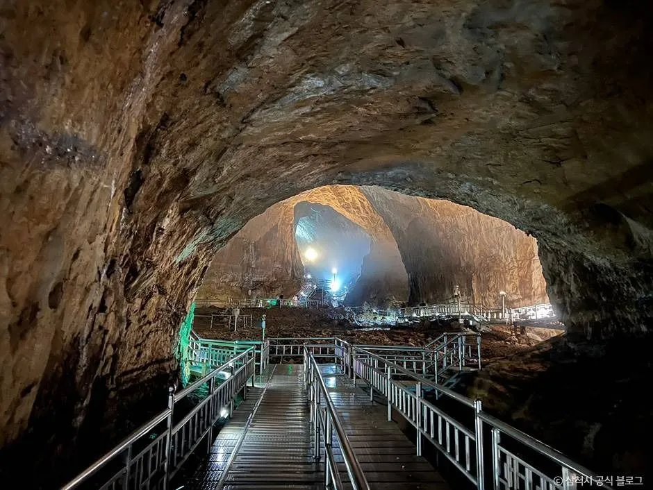
▲ 환선굴 관람로는 철제 데크와 난간이 이어져 있다 사진=한국관광공사
| 항목 | 내용 |
|---|---|
| 주소 | 강원특별자치도 삼척시 신기면 환선로 800 |
| 운영시간 | 3~10월 09:00~18:00(매표마감 16:30) / 11~2월 09:00~17:00(매표마감 16:00) |
| 입장료 | 어른 4,500원, 경로·청소년 3,000원, 어린이·군인 2,000원 |
| 모노레일(왕복) | 13세 이상 7,000원, 어린이 3,000원 (입장료 별도, 할인 미적용) — 2010년 4월 운행 시작 |
| 내부 온도 | 10~15℃ |
| 소요시간 | 약 2시간 (동굴 입구까지 왕복 약 1시간 + 내부 관람 약 1시간) |
| 휴무 | 매월 18일 (18일이 휴일·연휴이면 그 다음 평일) |
| 주차 | 대이동굴관광센터 앞 주차장 — 무료로 소개됨(전기차 충전정보 사이트 기준, 현장 확인 필요) |
| 표기 주의 | 같은 삼척시 페이지 안에서도 상단(09:00~18:00·매표마감 16:30)과 상세 '매표시간'(하절기 09:00~17:00)이 다르게 적혀 있다. 늦은 시간 입장은 전화 확인 필요 |
| 문의 | 1533-8362 |
환선굴이 다른 동굴과 다른 점은 입구까지 가는 길 자체가 일정의 큰 부분이라는 점이다. 주차장에서 동굴 입구까지는 산길을 올라야 하는데, 이 구간을 모노레일이 대신해 준다. 공식 안내상 동굴까지 왕복에 약 1시간이 걸린다고 하니, 모노레일을 타지 않으면 오르막 도보 시간까지 감안해야 한다.
▲ 동굴 내부에는 트인 공간이 이어지고 곳곳에 조명이 설치돼 있다 사진=한국관광공사
📍 모노레일은 날씨에 따라 멈출 수 있다
모노레일은 밀폐형 캐빈이라 비나 눈이 와도 운행되는 것으로 알려졌지만, 강풍·폭설 등 기상 악화 시에는 운행이 중단될 수 있다. 가을 태풍·강풍 예보가 있는 날에는 당일 운행 여부를 1533-8362로 확인하고 출발하는 편이 안전하다.
환선굴 입장료·운영시간·휴무일은 삼척시 문화관광 공식 페이지에서 확인 가능하다. 동굴 안은 조명이 어둡고 바닥이 젖은 구간이 있으니 미끄럼 방지 신발을 권한다. 삼척시 환선굴 공식 안내 바로가기
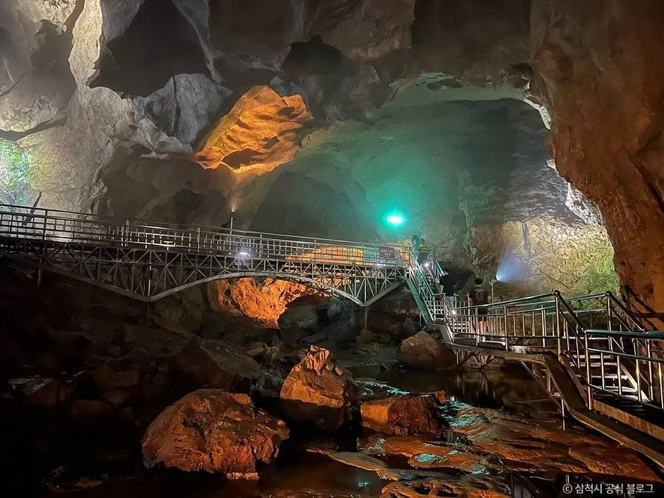
▲ 동굴 안 물길 위로 다리와 데크가 이어진다 사진=한국관광공사
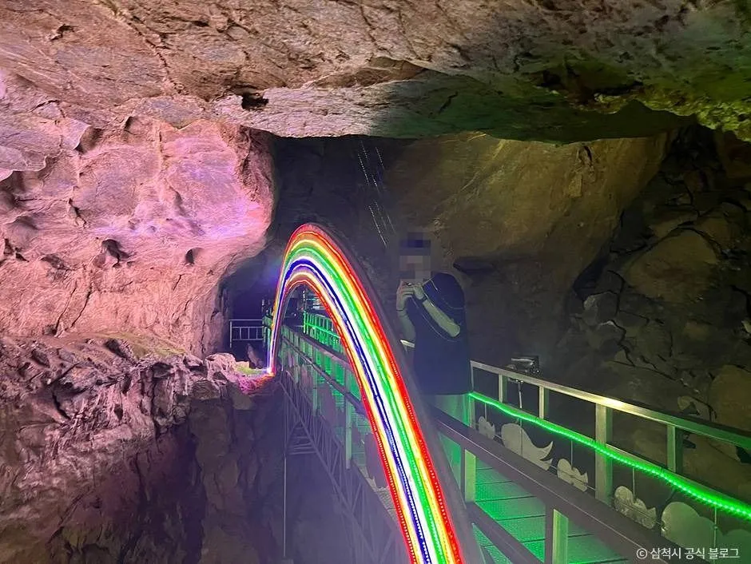
▲ 관람로 일부 구간에는 무지개 색 조명 연출이 더해져 있다 사진=한국관광공사
2. 같은 골짜기, 다른 동굴 — 대금굴은 "예약이 먼저"
환선굴이 있는 대이리 동굴지대에는 대금굴도 있다. 환선굴이 현장 발권이 가능한 것과 달리, 대금굴은 온라인 예약을 해야 입장할 수 있는 방식이다. 대금굴 공식 사이트 기준으로 매월 1일 오전 10시 30분에 다음 달 관람권 예매가 시작되고, 개인은 1회 최대 10명까지 예약할 수 있다. 삼척시 대금굴 안내에 따르면 예약 시간 30분 전까지 도착해야 하고, 모노레일(정원 40명)로 동굴 안 610m 지점까지 이동한 뒤 관람하며 총 1시간 40분(동굴 내부 약 1시간)이 걸린다. 모노레일은 30분 간격으로 하절기 17회, 동절기 14회 운행된다.
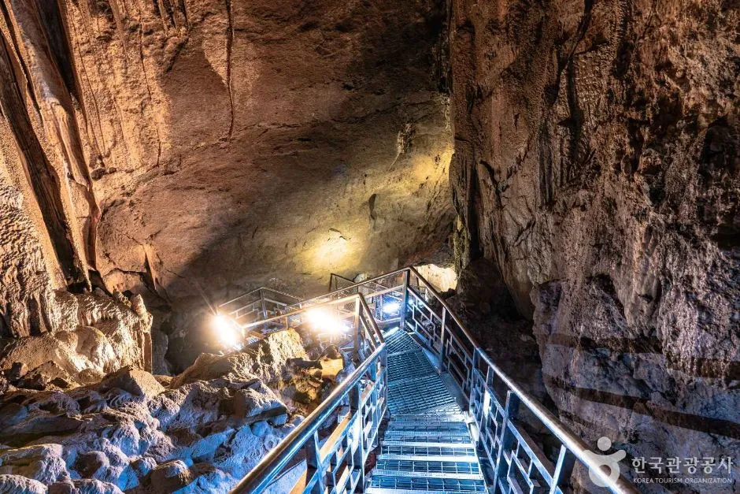
▲ 대금굴 내부 관람로. 석회암 벽면을 따라 계단과 난간이 설치돼 있다 사진=한국관광공사
| 구분 | 환선굴 | 대금굴 |
|---|---|---|
| 입장 방식 | 현장 발권 가능 | 온라인 사전 예약제 |
| 어른 요금 | 입장료 4,500원 + 모노레일 왕복 7,000원 (별도) | 12,000원 (모노레일 이용료 포함) |
| 운영시간 | 3~10월 09:00~18:00 / 11~2월 09:00~17:00 | 3~10월 09:00~17:00 / 11~2월 09:30~16:00 |
| 소요시간 | 약 2시간(왕복 1시간+내부 1시간) | 약 1시간 40분(내부 약 1시간) |
| 휴무 | 매월 18일 | 매월 18일 |
| 문의 | 1533-8362 | 1533-8362 |
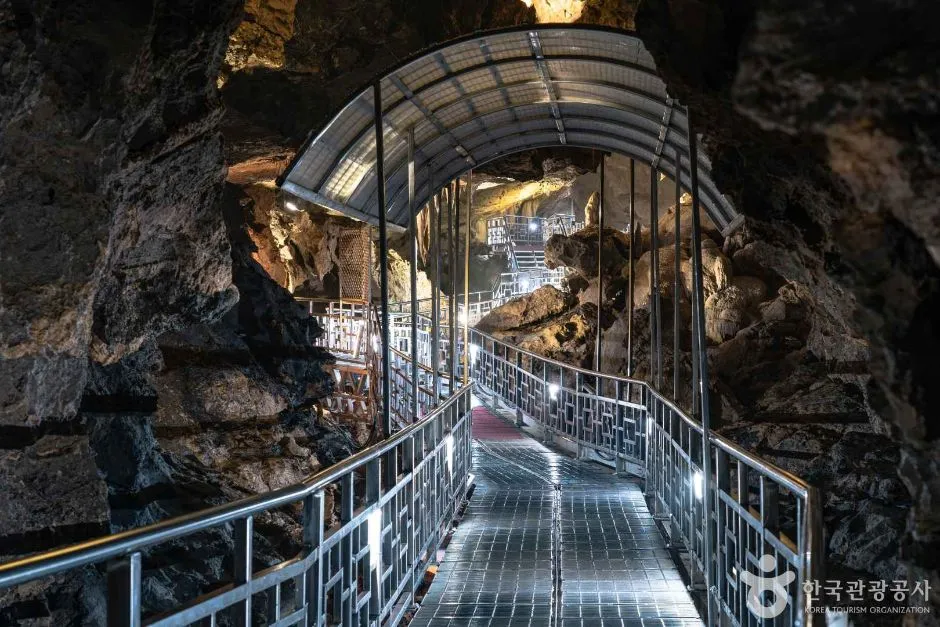
▲ 대금굴 관람로 일부 구간에는 지붕이 있는 철제 통로가 놓여 있다 사진=한국관광공사
✅ 동굴 선택 요령
· 즉흥 여행이라면 현장 발권이 되는 환선굴이 현실적이다
· 대금굴은 예매 개시일(매월 1일)에 미리 자리를 잡아야 주말 방문이 가능하다
· 두 동굴을 모두 보려면 시간이 빠듯하므로 하루 한 곳을 권한다(필자 판단)
· 두 동굴 모두 매월 18일 휴무, 대금굴은 예약 시간 30분 전 도착
대금굴 예매와 요금은 공식 사이트에서 확인할 수 있다. 대금굴 공식 사이트 바로가기
3. "한국의 나폴리"라 불리는 장호항 — 가을엔 무엇이 남아 있을까
동굴에서 나와 해안 쪽으로 내려오면 삼척시 근덕면의 장호항이 나온다. 삼척시 관광 안내에 따르면 장호해변은 삼척 시내에서 남쪽으로 약 25km, 차로 30분 안팎 거리에 있고, 2004년부터 장호어촌체험마을로 지정·운영돼 왔다. 방파제 등대와 바위섬, 붉은 다리가 모여 있어 사진 찍기 좋은 항구다.
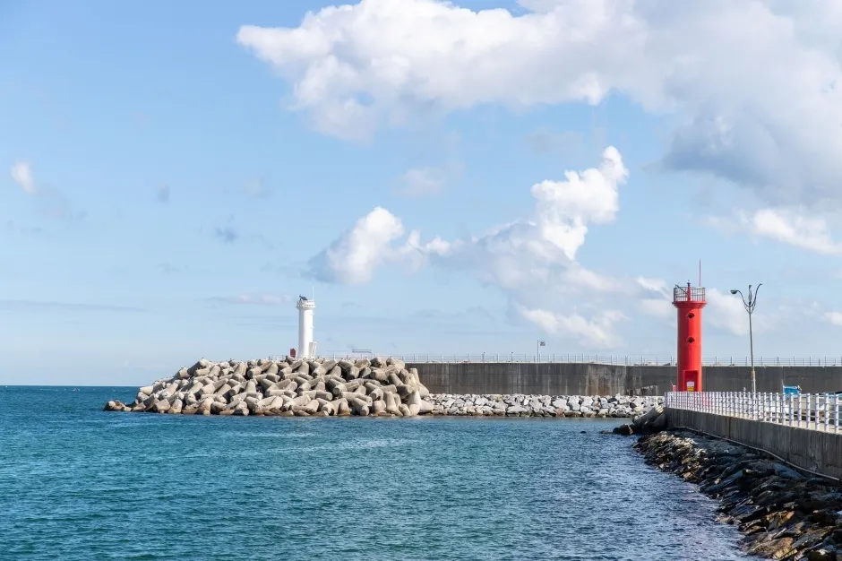
▲ 장호항 방파제에는 붉은 등대와 흰 등대가 서 있다 사진=한국관광공사
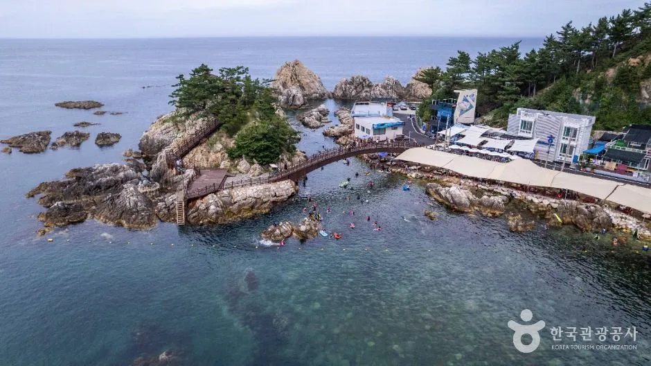
▲ 바위섬과 다리, 어촌 마을이 한눈에 들어오는 장호항 전경 사진=한국관광공사
투명카누·스노클링은 계절 체험이다. 2024년 7월 대한민국 정책브리핑(삼척시 소개)은 장호어촌체험마을 투명카누를 3~10월 운영, 30분 이용, 예약 없이 현장 접수로 소개했고, 기상에 따라 중단될 수 있으며 14세 미만은 보호자 동승 시 탑승할 수 있다고 안내했다. 마을 측 이용안내는 투명카누 5월 시작, 스노클링 6월 시작으로 적고 있다. 일부 여행 매체는 스노클링을 대체로 9월 말까지로 소개해, 9월 말~10월에는 스노클링이 끝났거나 수온 때문에 어려울 수 있다.
운영시간도 자료마다 다르다. 마을 이용안내에는 "09:00~17:00, 마지막 발권 16:30"이, 한국관광공사 정보에는 "09:00~17:30(시기·프로그램별 상이)"이 적혀 있어 당일 운영 여부와 마감 시각은 마을(010-8486-8954)에 전화로 확인하는 것이 확실하다.
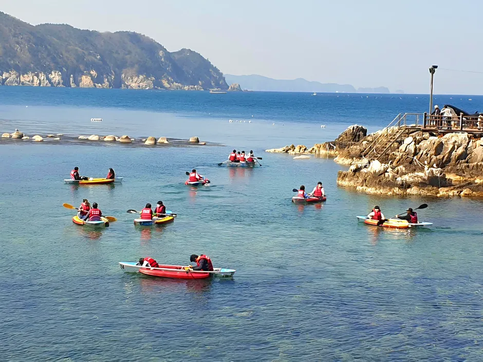
▲ 구명조끼를 입고 카누를 타는 장호항 체험 장면 사진=한국관광공사
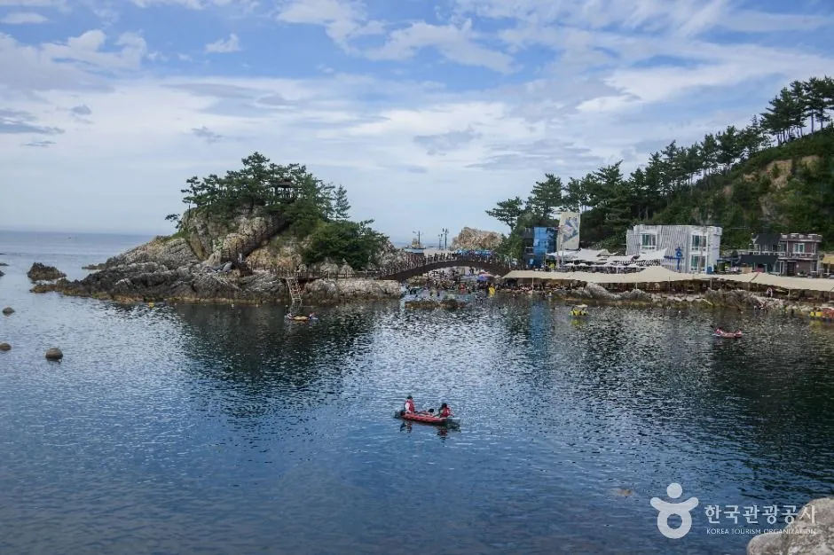
▲ 바위섬 다리 앞 잔잔한 바다에 카약이 떠 있다 사진=한국관광공사
| 체험 | 요금 |
|---|---|
| 투명카누 30분 | 2인승 25,000원 / 3인승 35,000원 / 4인승 44,000원 / 5~6인승 60,000원 |
| 스노클링 장비 | 수경·구명조끼·마우스 세트 13,000원 |
| 운영 기간 | 투명카누 3~10월 / 스노클링 6월~(종료 시점은 전화 확인) |
| 운영시간 | 자료마다 09:00~17:00·17:30·18:00로 상이 — 전화 확인 필요 |
| 예약 | 현장 접수(예약 불가), 기상에 따라 중단 가능 — 문의 010-8486-8954 |
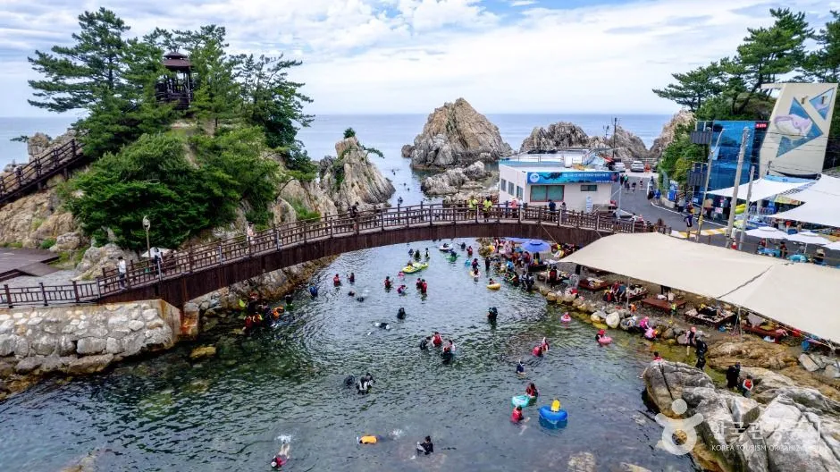
▲ 성수기의 장호항. 바위섬을 잇는 다리 주변 바다에서 사람들이 물놀이를 즐긴다(참고용 여름 사진) 사진=한국관광공사
📍 가을 장호항, 체험이 아니어도 갈 만하다
수온이 내려간 계절에는 물놀이 대신 방파제 산책·바위섬 다리·항구 횟집 중심으로 즐기게 된다. 투명카누가 접수를 마감했다면 아래에 소개하는 해상케이블카가 바다를 보는 대안이 된다.
4. 10분 만에 바다 위를 건넌다 — 삼척해상케이블카
장호항 바로 옆에서 출발하는 삼척해상케이블카는 용화역과 장호역을 잇는다. 삼척시 공식 안내 기준 길이 874m, 역 간 높이차 21m의 중간 철탑 없는 구간을 바다 위로 지나며, 편도 약 10분이 소요되는 것으로 소개된다.
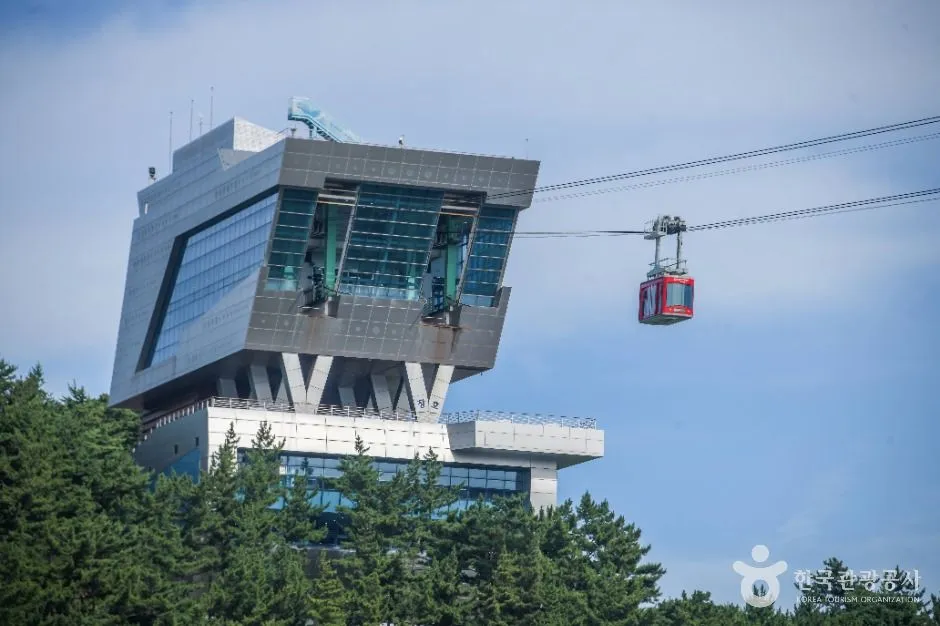
▲ 해안 언덕 위에 자리한 케이블카 역사와 붉은 캐빈 사진=한국관광공사
| 항목 | 내용 |
|---|---|
| 운영시간 | 09:00~18:00 (매표마감 17:10) |
| 정기휴무 | 매월 첫째·셋째 화요일 (공휴일이면 다음 평일) |
| 왕복 | 대인 10,000원 / 소인 6,000원 |
| 편도 | 대인 6,000원 / 소인 4,000원 |
| 탑승장 | 용화역(삼척로 2154-31) · 장호역(장호항길 12-10) |
| 문의 | 1668-4268 (반려동물 탑승 불가) |
자동차 여행자에게는 어느 쪽 역에 주차할지가 핵심이다. 장호항은 성수기에 주차가 매우 붐빌 수 있어, 용화역 쪽에 차를 세우고 케이블카로 장호항으로 넘어가는 방법이 대안으로 소개된다. 다만 장호역 쪽은 계단이 많아 고령자 동반 시 불편할 수 있다는 후기가 있다.
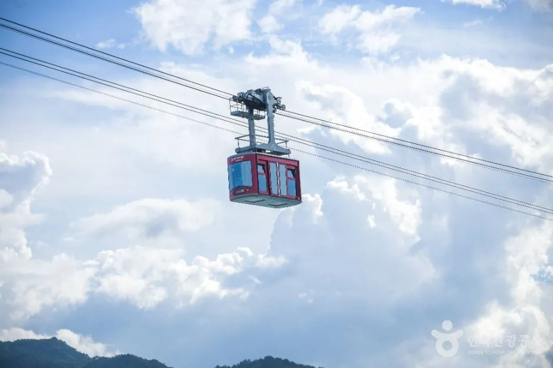
▲ 바다 위 케이블을 따라 운행하는 붉은 캐빈 사진=한국관광공사
운영 일정과 요금은 삼척시 문화관광 페이지에서 확인 가능하다. 삼척해상케이블카 공식 안내 바로가기
5. 케이블카 말고도 — 해양레일바이크와 장호 해변 야영장
장호해변은 삼척 해양레일바이크의 남쪽 종착역과 해상케이블카역이 함께 있는 곳이다. 2024년 7월 정책브리핑(삼척시 소개)에 따르면 삼척 해양레일바이크는 연중 운영(매월 둘째·넷째 주 수요일 휴무), 2인승 25,000원·4인승 35,000원, 용화~궁촌 정거장 5.4km를 약 1시간에 달리는 코스다. 요금과 휴무는 이후 바뀌었을 수 있으므로 삼척시 공식 예약 페이지에서 확인해야 한다.
| 시설 | 핵심 정보 | 근거 |
|---|---|---|
| 해상케이블카 | 874m, 왕복 대인 10,000원, 09:00~18:00 | 삼척시 공식 |
| 해양레일바이크 | 용화~궁촌 5.4km 약 1시간, 2인승 25,000원(2024년 기준) | 정책브리핑 2024-07 |
| 투명카누 | 30분, 2인승 25,000원~, 현장 접수 | 정책브리핑 2024-07 |
| 장호비치캠핑장 | 삼척로 2116, 야영장·샤워장·화장실 등 편의시설(삼척시 장호해변 안내) | 삼척시·한국관광공사 |
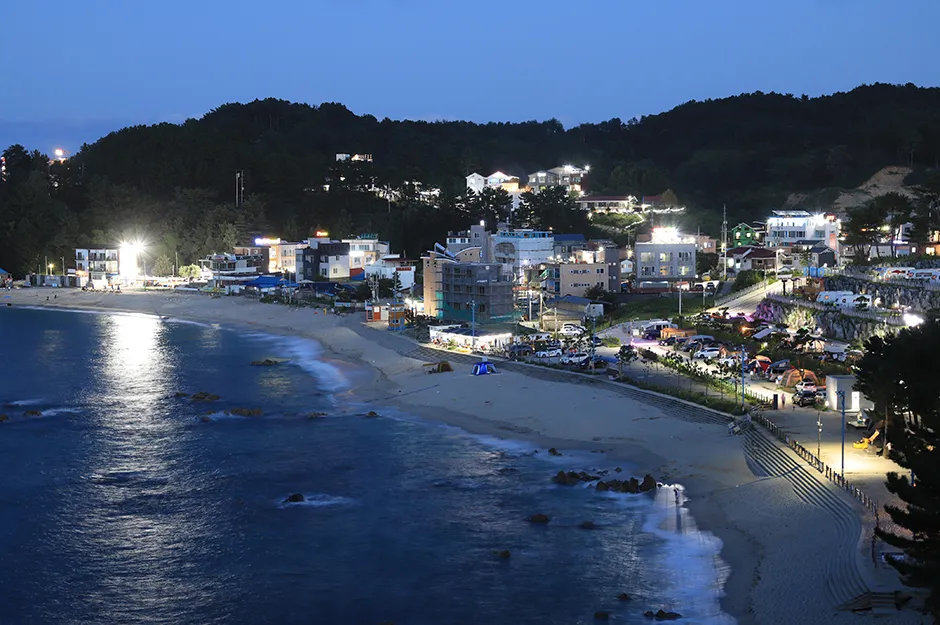
▲ 해 질 녘 불이 켜지는 장호 일대 해안(장호비치캠핑장 제공 사진) 사진=한국관광공사
📍 차박·캠핑은 야영장에서
장호해변에는 야영장이 운영되며, 요금·예약 방식은 시설별로 다르다. 해안 주차장에서의 차박이 허용되는지는 삼척시 공식 안내에서 확인하지 못했으므로 야영장 예약 후 이용하는 편이 안전하다.
6. 주차·이동 — 차를 어디에 세울까
환선굴·대금굴은 대이동굴관광센터 앞 주차장을 이용한다. 삼척시 공식 환선굴 페이지에는 주차 정보가 없고, 전기차 충전정보 사이트에는 이 주차장이 무료로 등록돼 있다. 다만 공식 확인이 어려워 현장 확인 필요로 둔다.
| 장소 | 주차 정보 |
|---|---|
| 환선굴·대금굴 | 대이동굴관광센터 앞 주차장, 무료로 소개됨(현장 확인 필요) |
| 장호해변·장호항 | 삼척시 안내(2023-01 수정): 승용차 주차장 2개소(각 100대 — 홍기동씨밭, 배밑에주차장, 정유소 광장 등), 대형버스 1개소(10대, 장호1리 선착장·배도크장 앞) |
| 성수기 대안 | 용화역 쪽 주차 후 케이블카 이용 |
📍 가을 산길 운전 팁
환선로는 계곡을 따라 이어지는 산길이다. 단풍철 주말에는 갓길 주정차 차량이 늘고, 일몰 이후에는 급격히 어두워지므로 동굴 일정을 오전에 끝내고 해안으로 내려오는 순서가 안전하다. 단풍 코스 전반은 가을 단풍 드라이브 코스 기사도 참고할 만하다.
7. 하루 일정으로 짜면 이렇게 — 가을 삼척 추천 동선
| 시간대 | 일정 | 메모 |
|---|---|---|
| 09:00 | 환선굴 도착·모노레일 탑승 | 겉옷 지참, 관람 약 2시간 |
| 12:00 | 해안 이동·점심 | 장호항 인근 식당 등 |
| 13:30 | 장호항 산책·투명카누(운영 시) | 운영 여부 현장 확인 |
| 15:30 | 삼척해상케이블카 | 매표마감 17:10 |
✅ 출발 전 체크리스트
· 환선굴 매월 18일 휴무, 케이블카 첫째·셋째 화요일 휴무 확인
· 동굴 내부는 10~15℃ — 가벼운 겉옷과 미끄럼 방지 신발
· 대금굴은 사전 예약, 환선굴은 현장 발권
· 가을 장호항 카누·스노클링은 운영 여부 사전 확인
· 해안 전체 드라이브는 동해안 7번 국도 드라이브 코스와 연계
8. 요약
환선굴은 내부 10~15℃, 관람 약 2시간, 입장료 4,500원에 모노레일 왕복 7,000원(삼척시 공식 기준, 매월 18일 휴무)이고, 대금굴은 온라인 예약제로 12,000원(모노레일 포함)이다. 해안의 장호항 투명카누는 3~10월 현장 접수로 안내되지만 스노클링 종료 시점과 가을 운영 여부는 전화 확인이 필요하며, 삼척해상케이블카는 874m 구간을 왕복 10,000원에 탈 수 있다.
오전에 동굴, 오후에 항구와 케이블카를 잡으면 자가용으로 가을 삼척을 하루에 돌아볼 수 있다. 다만 주차 요금과 시즌 체험 운영은 현장 확인이 필요하다.